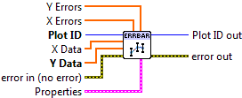
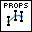

Add Errorbars¶
Overlay error bars on the plot.
Call a plotting VI such as Line Plot, Scatter Plot, or Bar Plot first to display the data. Then call this VI to add error bars. Note this VI only adds error bars; it does not display lines or markers by itself.
The only required input is Y Data, which specifies the point at the center of the error bar. The optional X Data defaults to an integer series 0..N-1, where N is the number of elements in Y Data.
For X Errors and Y Errors, the values given specify the distance from the data point to the end of the bar; in other words, if the value V is given, the full width of the bar will be 2V.
By default, the color used for the bar will be the last color used to make a bar, scatter, line, or histogram plot. You can manually specify a color via the Color setting.

 Plot ID/Plot ID Out
Plot ID/Plot ID Out- Plot identifier. Plot ID Out always contains the same value as Plot ID.
 X Data
X Data- Optional X locations of the data points. Defaults to 0..N-1.
- Y Data
- Y locations of the data points.
- X Errors
- Magnitudes of the errors in the X direction. The full width of the bar is twice the value provided.
- Y Errors
- Magnitudes of the errors in the Y direction. The full width of the bar is twice the value provided.
-  Properties
Property cluster, available under the “Properties” subpalette.
 Color
Color- Color of the error bars. Default is the last color used for the plot.
 Line Width
Line Width- Width of the error bar line, in points.
- Cap Size
- Length of the error bar cap, in points.
 Display
DisplayControls general appearance of the error bars.
- Alpha
- Alpha blending value for this object (0.0 to 1.0). Default is 1.0 (fully opaque).
- Z Order
- Stacking order. Default is chosen based on the object type.

 Error In/Out
Error In/Out- Terminals for standard error functionality.
Example¶
Download Error Bars.vi,
or see Examples for a complete list of examples.
Axis Types¶
This VI supports rectangular axes. Use with polar axes will result in 402905 - Operation Not Supported for Polar Plot.
Errors¶
Other information¶
If Y Data is empty, this VI does nothing.
If X Data, Y Data, X Errors, and Y Errors have different sizes, only the overlap will be displayed. If X Data is empty, the default (0..N-1) values will be used.
If a non-finite entry (NaN or Inf) appears in X Data or Y Data, neither bar will be displayed at that point. If a non-finite entry occurs in X Errors or Y Errors, the corresponding bar will not be displayed.
Negative values are permitted in X Errors and Y Errors; the absolute magnitude is used to display the bar.
Non-finite or negative values for Line Width and Cap Size will be ignored, and the defaults used. Zero values are permitted.